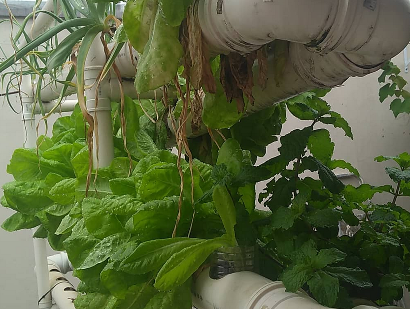
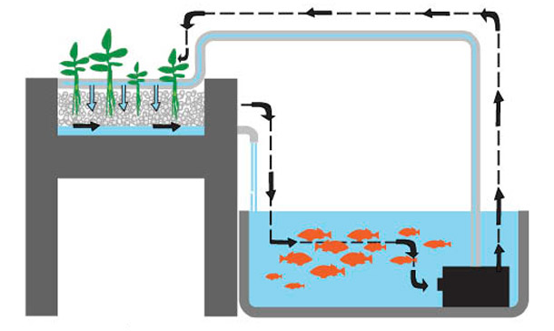
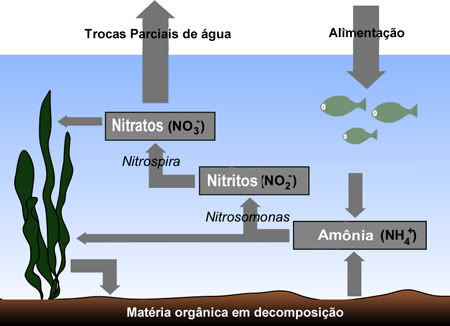
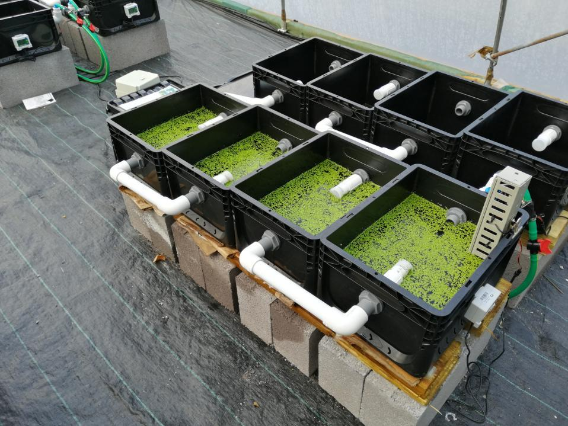

Seja bem-vindo ao guia definitivo da Aquaponia Brasil. Montar seu próprio sistema de recirculação aquapônica (RAS integrado) é um processo altamente técnico e eficiente: os resíduos metabólicos dos peixes são convertidos biologicamente em nutrientes assimiláveis pelas plantas, enquanto as raízes e as mídias purificam a água que retorna ao tanque.

Um ecossistema equilibrado: peixes e plantas em harmonia.01. O Reservatório (Tanque de Peixes)
O ponto de partida é a escolha de uma caixa d'água atóxica fabricada em polietileno virgem (PEAD) ou fibra de vidro. Para sistemas residenciais e iniciantes, volumes entre 500 e 1.000 litros oferecem maior estabilidade térmica e tamponamento contra oscilações químicas bruscas.
Cálculo de carga estrutural: Um reservatório de 1.000 litros pesa mais de 1 tonelada quando cheio. Posicione-o sempre sobre uma superfície totalmente plana, nivelada e com sustentação de solo ou laje calculada para essa carga.
Densidade de estocagem inicial: Para tilápias em sistemas iniciantes, mantenha a taxa conservadora de 10 kg a 20 kg de biomassa de peixe para cada 1.000 litros de água (biomassa final, com peixes adultos), evitando picos precoces de amônia. Comece com poucos peixes e aumente a população aos poucos, conforme o biofiltro amadurece.

02. Circulação Hidráulica e Bomba Submersa
A taxa de renovação da água é vital para garantir o carreamento de oxigênio dissolvido e a remoção contínua de amônia do tanque. A regra mandatória de dimensionamento é que a bomba submersa deve recircular o volume total do tanque de 1 a 2 vezes por hora (valor de referência; sistemas com maior biomassa de peixes podem exigir mais).
Exemplo de cálculo: Para um reservatório de 1.000 litros, a bomba precisa entregar uma vazão real de pelo menos 1.000 a 2.000 L/h na altura manométrica do seu sistema (descontando perdas por desnível e atrito nos canos).
Dica do Fábio: Nunca economize na bomba. Ela é o coração ininterrupto do sistema. Em sistemas aquapônicos de recirculação, a parada da bomba por poucas horas consome todo o oxigênio residual e causa perda dos peixes. Tenha sempre uma bomba reserva pronta para troca!
Equipamentos para Começar


03. Filtragem Mecânica e Biofiltro
O tratamento de água na aquaponia opera em duas etapas inseparáveis que antecedem as plantas:
1. Filtro Mecânico (Decantador/Vórtice ou Manta Perlon): Retém as fezes sólidas e restos de ração antes que se decomponham na coluna d'água. Consulte nosso guia sobre os filtros mecânicos para entender a construção de decantadores de fluxo radial.
2. Biofiltro (Ciclo do Nitrogênio): Mídias biológicas de alta área superficial (como conduítes corrugados, tampinhas plásticas, bio balls ou anéis de cerâmica/vidro sinterizado) abrigam colônias de bactérias nitrificantes. As bactérias Nitrosomonas oxidam a amônia tóxica (NH3) em nitrito (NO2-), e as bactérias Nitrobacter oxidam o nitrito no nitrato (NO3-), que é a fonte de adubo seguro e assimilável para a horta.

04. A Cama de Cultivo e Substratos
A cama de cultivo é onde a mágica da biofiltração vegetal se completa. A regra básica de proporção volumétrica é manter uma relação de 1:1 a 2:1 entre o volume da cama de cultivo e o volume do tanque de peixes.
Utilize substratos inertes como argila expandida ou brita nº 1 lavada em recipientes com profundidade útil de 25 a 30 cm. O cultivo pode operar por inundação contínua ou preferencialmente pelo ciclo de maré comandado por um sifão bell, oxigenando simultaneamente a rizosfera das raízes e o biofilme aderido ao substrato.

Parâmetros Químicos de Referência
Para manter peixes e vegetais saudáveis sem estresse fisiológico, monitore semanalmente a água e mantenha as leituras dentro destas faixas de equilíbrio:
| Parâmetro | Faixa Ideal | Limite Crítico | Ação Corretiva |
|---|---|---|---|
| pH | 6.8 a 7.2 | Menor que 6.0 / Maior que 7.8 | Hidróxido de cálcio / Bicarbonato de potássio |
| Amônia Total (NH3/NH4+) | Menor que 0.5 ppm | Maior que 1.0 ppm | Suspender ração e verificar biofiltro |
| Nitrito (NO2-) | Menor que 0.25 ppm | Maior que 0.5 ppm | Aumentar oxigenação e aeração biológica |
| Nitrato (NO3-) | 10 a 60 ppm | Maior que 150 ppm | Aumentar densidade de plantas na cama |
| Oxigênio Dissolvido | Maior que 5.0 mg/L | Menor que 3.0 mg/L | Adicionar aeração e venturis de emergência |
O aprendizado é constante. Cada erro é um ajuste para um sistema mais resiliente. Se você já tem os equipamentos básicos posicionados, comece a ciclagem da água imediatamente antes de introduzir qualquer peixe no reservatório!